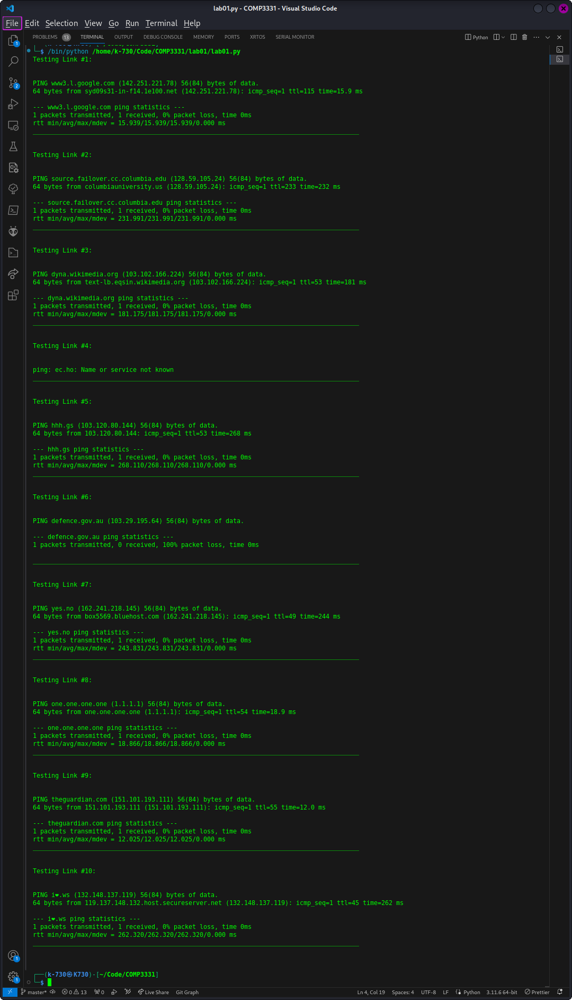
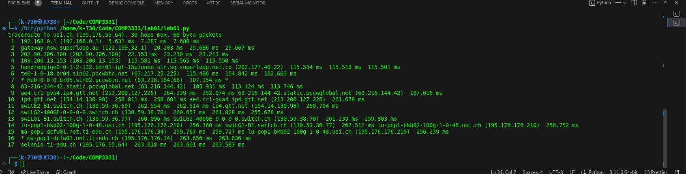
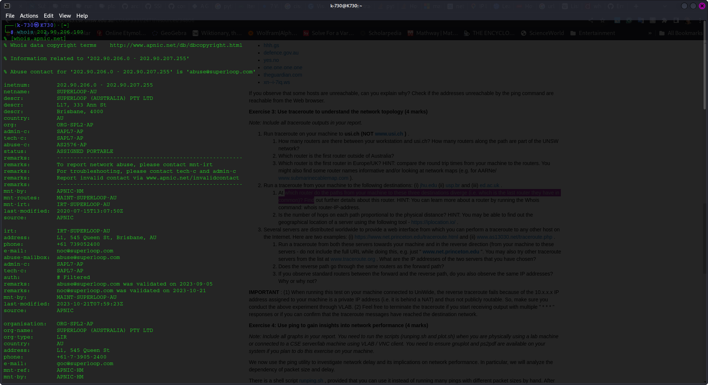

Disclaimer: THIS WAS EXERCISE WAS COMPLETED WITH MY HOME INTERNET.
Output for q2 
| URL | Reachable by ping | Reachable by Web |
|---|---|---|
| www.google.co.uk | Is reachable | Yes |
| www.columbia.edu | is reachable | Yes |
| www.wikipedia.org | is reachable | Yes |
| ec.ho | is NOT reachable. DNS non-e | NO |
| hhh.gs | is reachable. | Yes |
| defence.gov.au | NOT reachable by ping. Firewall blocks ICMP packet | Yes |
| yes.no | is reachable | Yes |
| one.one.one.one | is reachable | Yes |
| theguardian.com | is reachable | Yes |
| xn--i-7iq.ws | is reachable | Yes |

There are 17 routers along the path to the usi.ch from my home internet.
For UNSW, last UNSW router is router #5 (172.17.17.102). However, hop #3 may be concealed or blocked by a firewall. And hop #4 may be a virtual router on the same physical router. Therefore, the number of PHYSICAL UNSW ROUTERS is 3.
1 cserouter1-trusted.orchestra.cse.unsw.EDU.AU (129.94.208.251) 0.258 ms 0.156 ms 0.134 ms
2 129.94.39.17 (129.94.39.17) 0.982 ms 1.020 ms 0.956 ms
3 * * *
4 172.17.17.9 (172.17.17.9) 1.190 ms 172.17.17.45 (172.17.17.45) 1.435 ms 172.17.17.9 (172.17.17.9) 1.153 ms
5 172.17.17.102 (172.17.17.102) 4.096 ms 4.085 ms 172.17.17.110 (172.17.17.110) 4.089 ms
6 138.44.5.0 (138.44.5.0) 16.233 ms 14.831 ms 14.752 ms
7 et-1-1-0.pe1.rsby.nsw.aarnet.net.au (113.197.15.12) 1.764 ms 1.808 ms 1.783 ms
8 xe-1-1-0.pe1.eskp.nsw.aarnet.net.au (113.197.15.199) 3.321 ms 3.197 ms 3.178 ms
9 et-0-3-0.pe1.prka.sa.aarnet.net.au (113.197.15.42) 20.299 ms 20.213 ms 20.196 ms
10 et-0-3-0.pe1.knsg.wa.aarnet.net.au (113.197.15.45) 46.248 ms 46.174 ms 45.969 ms
11 et-1_0_5.bdr1.sing.sin.aarnet.net.au (113.197.15.231) 92.426 ms 92.614 ms 92.506 ms
12 138.44.226.7 (138.44.226.7) 256.352 ms 256.422 ms 256.315 ms
13 ae2.mx1.lon2.uk.geant.net (62.40.98.65) 272.069 ms 271.894 ms 271.786 ms
14 ae8.mx1.par.fr.geant.net (62.40.98.107) 263.617 ms 263.569 ms 263.309 ms
15 ae7.mx1.gen.ch.geant.net (62.40.98.238) 271.353 ms 271.193 ms 271.076 ms
16 swice1-100ge-0-3-0-1.switch.ch (62.40.124.22) 273.588 ms 274.746 ms 272.978 ms
17 swiLG2-400GE-0-0-0-0.switch.ch (130.59.38.70) 276.485 ms 276.605 ms 278.114 ms
18 swiLG1-B1.switch.ch (130.59.36.77) 275.449 ms 274.842 ms 274.952 ms
19 lu-pop1-bkb02-100g-1-0-48.usi.ch (195.176.176.210) 274.932 ms 275.084 ms 275.181 ms
20 ma-pop1-dcfw01.net.ti-edu.ch (195.176.176.34) 274.961 ms 274.938 ms 275.452 ms
21 selenio.ti-edu.ch (195.176.55.64) 276.089 ms 275.713 ms 276.151 ms
% Information related to '138.44.5.0/24AS7575'
route: 138.44.5.0/24
origin: AS7575
descr: Australian Academic and Research Network
Building 9
Banks Street
mnt-by: MAINT-AARNET-AP
last-modified: 2019-04-03T03:55:51Z
source: APNIC
The first international router outside of Australia is Singapore as seen from geoiplookup and the website geolocater ipregistery.co

The first EU router is number 10. Which is ip4.gtt.net (154.14.130.98).

The last routers that the paths have in common is router #3 with IP address: 202.90.206.100
Testing Link #1:
traceroute to jhu.edu (128.220.192.230), 30 hops max, 60 byte packets
1 192.168.0.1 (192.168.0.1) 15.191 ms 21.288 ms 27.416 ms
2 gateway.nsw.superloop.au (122.199.32.1) 46.606 ms 46.539 ms 46.475 ms
3 202.90.206.100 (202.90.206.100) 46.410 ms 46.346 ms 46.281 ms
4 Bundle-Ether31.bdr02-ipt-47bourke-syd.au.superloop.com (103.200.13.67) 68.853 ms 87.230 ms 87.166 ms
5 HundredGigE0-0-1-2.122.bdr01-ipt-220queen-akl.nz.superloop.com (111.118.196.23) 79.248 ms 79.183 ms 79.119 ms
6 as6939.akl.ix.nz (43.243.21.17) 87.803 ms 34.513 ms 35.063 ms
7 100ge0-32.core1.akl2.he.net (184.104.196.117) 39.621 ms 39.571 ms 39.623 ms
8 100ge0-28.core1.pdx3.he.net (184.104.188.77) 240.374 ms 240.333 ms 240.294 ms
9 * * *
10 * * *
11 * * port-channel15.core2.sea1.he.net (184.104.199.69) 242.199 ms
12 * * *
13 * * *
14 * johns-hopkins-university.e0-2.switch2.ash1.he.net (209.51.168.62) 327.658 ms 309.595 ms
15 addr16212925394.testippl.jhmi.edu (162.129.253.94) 306.398 ms * *
16 * addr16212925394.testippl.jhmi.edu (162.129.253.94) 297.923 ms 297.888 ms
17 addr16212925394.testippl.jhmi.edu (162.129.253.94) 297.854 ms 162.129.255.245 (162.129.255.245) 300.153 ms *
18 * * *
19 * * *
20 * * *
21 collaborate.johnshopkins.edu (128.220.192.230) 328.693 ms * *
________________________________________________________________________________________
Testing Link #2:
traceroute to usp.br (200.144.248.41), 30 hops max, 60 byte packets
1 192.168.0.1 (192.168.0.1) 2.067 ms 2.085 ms 2.005 ms
2 gateway.nsw.superloop.au (122.199.32.1) 12.071 ms 19.326 ms 19.336 ms
3 202.90.206.100 (202.90.206.100) 19.283 ms 19.263 ms 19.236 ms
4 Bundle-Ether30.bdr02-ipt-639garde-syd.au.superloop.com (103.200.13.65) 19.199 ms 19.174 ms 19.153 ms
5 8.245.132.225 (8.245.132.225) 45.071 ms 45.049 ms 45.028 ms
6 NTT-level3-Syndey1.Level3.net (4.68.38.206) 28.267 ms 9.160 ms 9.004 ms
7 ae-1.r20.sydnau05.au.bb.gin.ntt.net (129.250.2.133) 17.019 ms 16.985 ms 16.966 ms
8 ae-5.r24.lsanca07.us.bb.gin.ntt.net (129.250.2.52) 226.123 ms 226.107 ms 226.090 ms
9 ae-3.r22.dllstx14.us.bb.gin.ntt.net (129.250.7.68) 226.443 ms 226.425 ms 226.409 ms
10 ae-2.r22.miamfl02.us.bb.gin.ntt.net (129.250.2.218) 268.188 ms 233.320 ms 233.275 ms
11 ae-0.a02.miamfl02.us.bb.gin.ntt.net (129.250.2.4) 233.253 ms ae-0.a03.miamfl02.us.bb.gin.ntt.net (129.250.7.44) 233.234 ms ae-0.a02.miamfl02.us.bb.gin.ntt.net (129.250.2.4) 233.216 ms
12 xe-1-5-0-2.a02.miamfl02.us.ce.gin.ntt.net (129.250.200.158) 234.152 ms xe-3-3-0-1.a03.miamfl02.us.ce.gin.ntt.net (129.250.202.94) 225.462 ms xe-1-5-0-2.a02.miamfl02.us.ce.gin.ntt.net (129.250.200.158) 229.025 ms
13 mia2-mia1.bkb.rnp.br (200.143.252.26) 245.074 ms cce2-mia2-monet.bkb.rnp.br (170.79.213.46) 290.252 ms mia2-mia1.bkb.rnp.br (200.143.252.26) 229.121 ms
14 cce2-mia2-monet.bkb.rnp.br (170.79.213.46) 302.256 ms 170.79.212.249 (170.79.212.249) 337.082 ms 337.038 ms
15 170.79.212.249 (170.79.212.249) 339.438 ms csp2-csp1-100g-via-sp2.bkb.rnp.br (170.79.213.233) 335.766 ms 170.79.212.249 (170.79.212.249) 337.233 ms
16 csp2-csp1-100g-via-sp2.bkb.rnp.br (170.79.213.233) 342.245 ms 342.225 ms e72361-sp2-r06-nx-swc.uspnet.usp.br (143.107.249.38) 350.788 ms
17 * as28571.saopaulo.sp.ix.br (187.16.220.3) 347.215 ms 345.300 ms
18 * e72361-sp2-r06-nx-swc.uspnet.usp.br (143.107.249.38) 349.355 ms 337.955 ms
19 * * *
20 * * *
21 * * *
22 * * *
23 * * *
24 * * *
25 * * *
26 * * *
27 * * *
28 * * *
29 * * *
30 * * *
________________________________________________________________________________________
Testing Link #3:
traceroute to ed.ac.uk (129.215.235.217), 30 hops max, 60 byte packets
1 192.168.0.1 (192.168.0.1) 2.158 ms 3.556 ms 3.505 ms
2 gateway.nsw.superloop.au (122.199.32.1) 15.328 ms 16.180 ms 15.236 ms
3 202.90.206.100 (202.90.206.100) 15.191 ms 15.144 ms 10.882 ms
4 103.200.13.153 (103.200.13.153) 338.927 ms 338.883 ms 338.838 ms
5 hundredgige0-0-1-2-132.bdr01-ipt-15pionee-sin.sg.superloop.net.co (202.177.40.22) 338.793 ms 338.748 ms 338.700 ms
6 202-130-207-34.ip4.superloop.au (202.130.207.34) 338.657 ms 323.728 ms 293.988 ms
7 mei-b5-link.ip.twelve99.net (62.115.176.152) 293.918 ms 293.884 ms 293.852 ms
8 prs-bb1-link.ip.twelve99.net (62.115.124.54) 293.819 ms prs-bb2-link.ip.twelve99.net (62.115.124.56) 293.749 ms prs-bb1-link.ip.twelve99.net (62.115.124.54) 293.700 ms
9 * * *
10 ldn-b2-link.ip.twelve99.net (62.115.122.189) 326.696 ms ldn-b2-link.ip.twelve99.net (62.115.120.239) 326.622 ms 326.604 ms
11 jisc-ic-345131.ip.twelve99-cust.net (62.115.175.131) 326.586 ms 326.570 ms 326.554 ms
12 ae24.londhx-sbr1.ja.net (146.97.35.197) 326.596 ms 326.579 ms 326.562 ms
13 ae29.londpg-sbr2.ja.net (146.97.33.2) 326.486 ms 326.468 ms 326.451 ms
14 ae31.erdiss-sbr2.ja.net (146.97.33.22) 326.493 ms 311.451 ms 311.333 ms
15 ae29.manckh-sbr2.ja.net (146.97.33.42) 311.266 ms 311.201 ms 311.133 ms
16 ae31.glasss-sbr1.ja.net (146.97.33.54) 311.067 ms 311.005 ms 310.938 ms
17 ae29.edinat-rbr2.ja.net (146.97.38.38) 310.934 ms 310.823 ms 310.735 ms
18 ae25.edinkb-rbr2.ja.net (146.97.74.34) 310.668 ms 310.606 ms 405.933 ms
19 university-of-edinburgh.ja.net (146.97.156.78) 405.820 ms 405.753 ms 405.689 ms
20 remote.net.ed.ac.uk (192.41.103.209) 405.623 ms 405.561 ms 405.496 ms
21 * * *
22 * * *
23 * * *
24 * * *
25 * * *
26 * * *
27 * * *
28 * * *
29 * * *
30 * * *
Further information about this router reveals my Internet Service Provider with SuperLoop. It is apparently located in Brisbane 
Hop count and physical distance is weakly correlated. Since the hop count to Edinburgh is lower than to New York, despite New York being closer to Sydney.
However, it also seems that the hop count to Sau Paulo is the lowest but only by a small amount when compared to Edinburgh.
Ultimately, hop count and physical distance must be weakly correlated as there must be other factors that contribute to varying hop count such as queuing or transmission delay, etc. (Scepticism is required here because the sample size is small)
| # | Link | Hops | Location | Euclidean Distance from Sydney(km) |
|---|---|---|---|---|
| 1 | jhu.edu | 21 | New York | 15,728 |
| 2 | usp.br | 18 | Sao Paulo | 14,235 |
| 3 | ed.ac.uk | 20 | Edinburgh | 17,006 |
My public public ip address is 116.255.12.95 as follows:


IP address of the selected links:
| Link | IP Address |
|---|---|
| https://www.net.princeton.edu | 128.112.128.55 |
| https://www.as13030.net | 213.144.137.198 |
Testing Link #1:
traceroute to 128.112.128.55 (128.112.128.55), 30 hops max, 60 byte packets
1 192.168.0.1 (192.168.0.1) 3.304 ms 3.253 ms 3.225 ms
2 gateway.nsw.superloop.au (122.199.32.1) 13.004 ms 17.284 ms 17.259 ms
3 202.90.206.100 (202.90.206.100) 17.236 ms 17.211 ms 17.187 ms
4 Bundle-Ether31.bdr02-ipt-47bourke-syd.au.superloop.com (103.200.13.67) 171.438 ms 171.416 ms 171.390 ms
5 103.200.13.168 (103.200.13.168) 171.366 ms 171.345 ms 171.322 ms
6 ae7.er3.lax112.us.zip.zayo.com (64.124.204.201) 167.721 ms 169.392 ms 169.347 ms
7 ae1.cs1.lax112.us.eth.zayo.com (64.125.28.234) 169.325 ms 160.977 ms 160.932 ms
8 * * *
9 lsan0.tr-cps.internet2.edu (206.223.123.199) 171.397 ms 168.440 ms 169.764 ms
10 fourhundredge-0-0-0-0.4079.core1.losa.net.internet2.edu (163.253.1.18) 241.399 ms 237.475 ms 241.261 ms
11 fourhundredge-0-0-0-2.4079.core2.salt.net.internet2.edu (163.253.1.115) 237.342 ms 237.277 ms 236.843 ms
12 fourhundredge-0-0-0-23.4079.core1.salt.net.internet2.edu (163.253.1.32) 235.586 ms fourhundredge-0-0-0-0.4079.core2.denv.net.internet2.edu (163.253.1.168) 240.552 ms 240.479 ms
13 fourhundredge-0-0-0-0.4079.core1.denv.net.internet2.edu (163.253.1.170) 241.289 ms 241.116 ms 234.982 ms
14 fourhundredge-0-0-0-0.4079.core1.kans.net.internet2.edu (163.253.1.243) 232.442 ms 228.669 ms 228.619 ms
15 fourhundredge-0-0-0-3.4079.core2.chic.net.internet2.edu (163.253.1.244) 234.947 ms 235.354 ms 235.320 ms
16 fourhundredge-0-0-0-3.4079.core2.eqch.net.internet2.edu (163.253.2.19) 243.913 ms 242.835 ms 238.887 ms
17 fourhundredge-0-0-0-0.4079.core2.clev.net.internet2.edu (163.253.2.16) 238.835 ms 237.978 ms 237.925 ms
18 fourhundredge-0-0-0-3.4079.core2.ashb.net.internet2.edu (163.253.1.138) 239.343 ms 237.192 ms 247.316 ms
19 fourhundredge-0-0-0-1.4079.core1.phil.net.internet2.edu (163.253.1.137) 242.496 ms 237.738 ms 244.364 ms
20 198.71.47.99 (198.71.47.99) 245.536 ms 229.349 ms 234.627 ms
21 172-96-130.unassigned.userdns.com (172.96.130.54) 239.439 ms 234.492 ms 239.305 ms
22 fw-border-87-router.princeton.edu (204.153.48.2) 232.358 ms 227.431 ms 243.333 ms
23 rtr-core-east-router.princeton.edu (128.112.12.9) 234.012 ms 236.782 ms 233.528 ms
24 core-ns-router.princeton.edu (128.112.12.226) 236.484 ms 235.197 ms 231.769 ms
25 www.net.princeton.edu (128.112.128.55) 239.396 ms 237.406 ms 237.373 ms
________________________________________________________________________________________
Testing Link #2:
traceroute to 213.144.137.198 (213.144.137.198), 30 hops max, 60 byte packets
1 192.168.0.1 (192.168.0.1) 2.394 ms 2.187 ms 2.080 ms
2 gateway.nsw.superloop.au (122.199.32.1) 16.766 ms 16.695 ms 16.630 ms
3 202.90.206.100 (202.90.206.100) 16.562 ms 16.499 ms 16.434 ms
4 Bundle-Ether31.bdr02-ipt-47bourke-syd.au.superloop.com (103.200.13.67) 170.546 ms 170.481 ms 170.402 ms
5 103.200.13.168 (103.200.13.168) 170.312 ms 170.238 ms 170.165 ms
6 ae7.er3.lax112.us.zip.zayo.com (64.124.204.201) 166.297 ms 162.300 ms 165.952 ms
7 * * *
8 * ae3.cs1.dfw2.us.eth.zayo.com (64.125.29.52) 302.892 ms *
9 * * *
10 * * *
11 * * *
12 * * *
13 ae4.mpr1.lhr15.uk.zip.zayo.com (64.125.28.195) 411.204 ms 411.053 ms 410.948 ms
14 linx-1.init7.net (195.66.224.175) 409.406 ms 304.998 ms 303.598 ms
15 r2lon2.core.init7.net (5.180.134.18) 319.055 ms 318.987 ms 306.551 ms
16 r2fra3.core.init7.net (5.180.135.129) 316.665 ms 306.787 ms 312.380 ms
17 r1fra3.core.init7.net (77.109.135.33) 305.750 ms 350.166 ms 309.587 ms
18 r2zrh2.core.init7.net (5.180.135.172) 320.704 ms 318.045 ms 318.820 ms
19 r2zrh5.core.init7.net (5.180.135.233) 317.848 ms 317.750 ms 317.664 ms
20 r1glb3.core.init7.net (5.180.135.68) 320.151 ms 319.714 ms 316.152 ms
21 r1zrh10.core.init7.net (5.180.135.58) 317.145 ms 316.989 ms 315.228 ms
22 r1win9.core.init7.net (5.180.135.57) 313.904 ms 411.340 ms 411.220 ms
23 r2win9.core.init7.net (5.180.135.0) 402.618 ms 402.474 ms 402.363 ms
24 r2win7.core.init7.net (5.180.135.30) 402.224 ms 401.876 ms 400.120 ms
25 * * *
26 * * *
27 * * *
28 * * *
29 * * *
30 * * *
________________________________________________________________________________________
The paths of the reverse and forward route are different.
Albeit, as seen above the reverse route goes through some similar routers with the forward route as with the case for <Bundle-Ether31.bdr02-ipt-47bourke-syd.au.superloop.com> which implies my Superloop ISP. However, for both routes there are many routers which are different because of the different IP addresses.
Something to note is the close proximity of the IP addresses for https://init.7, which may imply a server hosting many machines to achieve this.
Standard routers appear if the IP address has not been translated. This is the case with https://www.net.princeton.edu/traceroute.html . However, it appears with the https://init.7 and my SuperLoop ISP have used a translated IP (NAT Gateway) which may explain why the terminating IP addresses are different.


| Packet-Size | Avg | Min |
|---|---|---|
| 50 | 71.14 | 61.694 |
| 250 | 67.106 | 61.878 |
| 500 | 68.239 | 62.84 |
| 750 | 67.265 | 63.326 |
| 1000 | 67.785 | 62.549 |
| 1250 | 67.948 | 62.787 |
| 1500 | 69.891 | 62.854 |


| Packet-Size | Avg | Min |
|---|---|---|
| 50 | 392.834 | 334.572 |
| 250 | 404.478 | 332.872 |
| 500 | 397.889 | 335.137 |
| 750 | 389.037 | 333.947 |
| 1000 | 397.218 | 335.194 |
| 1250 | 397.085 | 335.352 |
| 1500 | 395.499 | 333.484 |


| Packet-Size | Avg | Min |
|---|---|---|
| 50 | 350.898 | 284.239 |
| 250 | 345.494 | 291.038 |
| 500 | 345.516 | 284.403 |
| 750 | 340.107 | 288.637 |
| 1000 | 339.109 | 286.988 |
| 1250 | 357.529 | 289.484 |
| 1500 | 339.793 | 284.49 |
| Link | Location | Euclidean Distance from Sydney(km) | Time to Destination(s) | Time to destination (ms) | Speed of light (m/s) | 300000000 |
|---|---|---|---|---|---|---|
| cdu.edu.au | Darwin | 3,149 | 0.01049666667 | 10.49666667 | Speed of light (km/s) | 300000 |
| usp.br | Sao Paulo | 14,235 | 0.04745 | 47.45 | ||
| ed.ac.uk | Edinburgh | 17,006 | 0.05668666667 | 56.68666667 |

Possible reasons that the y-axis is greater than two are:
Delay to the destination will vary over time. This is because the nodes/routers to the destination will have manage other packets and this means that factors such as processing, queueing and transmission time will also wildy vary. As such, each time a packet is sent to the destination it's RTT will vary.
| # | Delay type | Definition | Formula |
|---|---|---|---|
| 1 | Processing | time required to examine the packet headers and determine redirection | |
| 2 | Queueing | time spent by the packet waiting to be transmitted onto the link | |
| 3 | Transmission | time required to push the packet into the link | $(L / R)$ |
| 4 | Propogation | time spent by the packet travelling from the beginning to end node | $(d / v)$ |
Where:
$R$ = Transmission rate of the link
$L$ = The packet length in bits
$d$ = The distance between two nodes (routers)
$v$ = The speed of light in a physical medium
Transmission delay depends on the size of the packet $L$.
Processing delay can also depend on the packet size but to a smaller degree than transmission delay as it is in the order of microseconds[Computer Networking. Kurose page 64] and much smaller than a transmission delay.
The others do not.